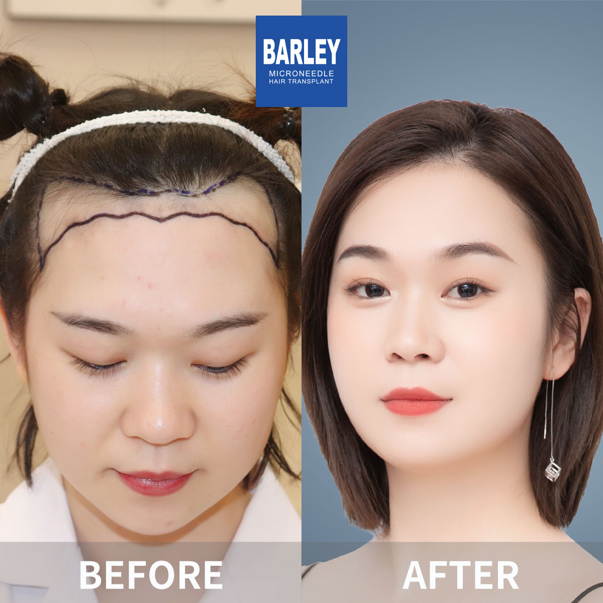
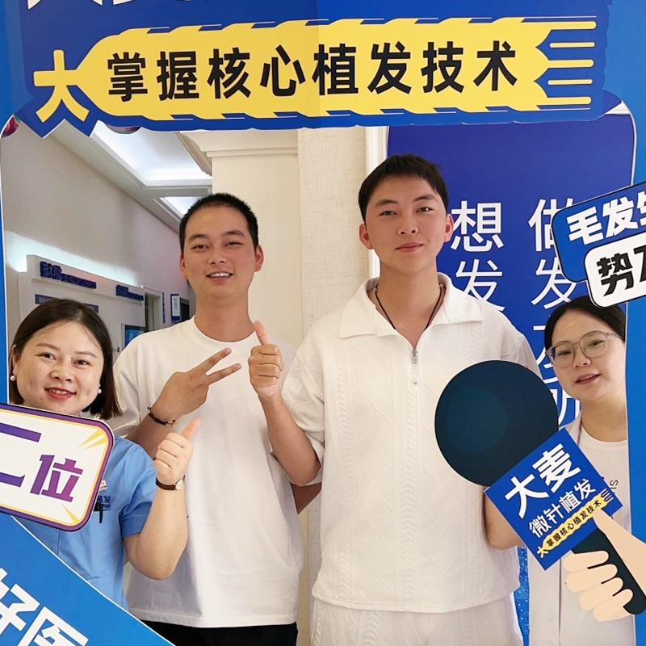

Barley Hair Medical Group is a leading medical group in China's high-end hair treatment services industry. We are the pioneer and leader of microneedle hair transplant and no-shave hair transplant in China.
For 5 consecutive years, we have achieved the number one position in hair transplant surgery volume and hair loss treatment volume in first-tier cities across China. With our core hair transplant technologies, we have become the leader in innovation and development in China's hair health industry.
Direct-operated clinics worldwide
Patented microneedle technologies
Years of experience
Successful procedures
Comprehensive solutions tailored to your unique hair loss needs
Personalized hairline design and transplantation for natural-looking results.
Add density to thinning areas with precision microneedle implantation.
Comprehensive restoration for crown and vertex baldness.
Natural-looking eyebrow restoration with precise placement.
Create the perfect beard or mustache with artistic implantation.
Restore or enhance sideburns for a more masculine appearance.
Body hair transplantation for chest, pubic, and other areas.
Comprehensive treatments for various types of hair loss conditions.
Professional hair care and maintenance treatments for healthy hair.
Microneedle hair transplant, also known as implant pen technology, works by placing individual hair follicles into the hollow tip of the implant pen, then directly pushing the follicle into the pre-designed recipient area of the scalp. The pen can be rotated 360° to match natural hair growth direction, significantly reducing trauma and patient pain while avoiding secondary follicle damage.
Discover why we're the trusted choice for hair restoration worldwide
Pioneer and leader in microneedle hair transplant technology since 2006
Across major cities in China, all with the same high standards
Innovative microneedle and implant pen technology for superior results
Trusted by patients from around the globe for life-changing results
Full English support for international patients throughout treatment
State-of-the-art facilities and strict safety protocols for your peace of mind
See the amazing transformations our patients have achieved



Moments captured with our satisfied patients

Posing with our medical team after successful procedure

Celebrating fantastic results with our doctors

Another satisfied patient shares their joy

Patient with our specialist before discharge

Happy patient with Dr. Chen post-treatment

Excited patient showing their new look
Hear from our satisfied patients around the world
"I researched hair transplant clinics worldwide before choosing Barley. Their microneedle technology is simply amazing. The results look completely natural, and my confidence is back!"
"Best hair restoration experience possible. From the English-speaking staff to the expert doctors, everything was perfect. I highly recommend Barley to anyone considering hair transplant."
"After 18 years of excellence, Barley really lives up to their reputation. I got the Sullivan-certified quality treatment at a fraction of what it would cost in my home country. Absolutely fantastic!"
"The 360-degree rotation implant pen made all the difference. My hairline looks so natural that even my barber couldn't tell I had a transplant. Worth every penny!"
"I flew all the way from Dubai to Shanghai for my procedure. The cost was amazing, and the quality is world-class. 30+ clinics across China means convenience for future touch-ups too!"
"10+ patents and 100,000+ successful procedures speak for themselves. Barley is clearly the leader in microneedle technology. My hair restoration journey has been life-changing."
Experience our modern and comfortable facilities

Our state-of-the-art facility

Relax in our premium lounge

Sterile and advanced

Private and professional

Comfortable post-op space
Welcoming entrance
Find our hospitals in major cities across China
Find answers to common questions about hair transplantation
Click to copy contact information
15810155700
+86 15810155700
hairtransplant@qq.com